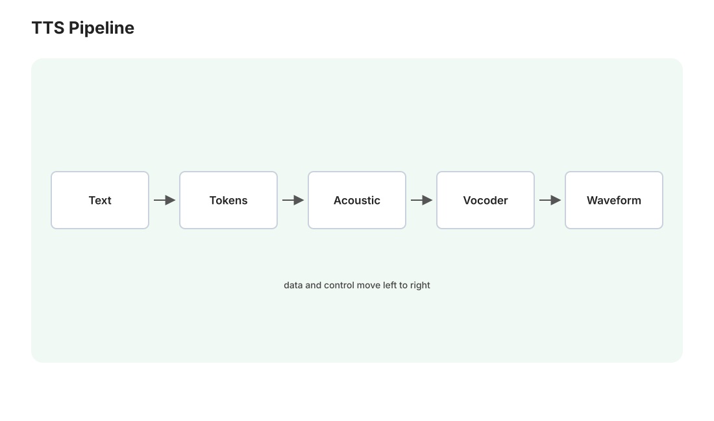

本讲目录
第 19 讲 · 语音生成：TTS 与声音克隆
语音是本地 AIGC 性价比最高的领域：开源方案已逼近商业水准，显存需求却只有 2–6GB——你的卡跑起来绰绰有余。本讲按四步框架过一遍语音的表示与三代范式（数学上有个漂亮的新零件：RVQ），然后是工具选型、本地部署和声音克隆实操。

1. 表示：从波形到"音频的 token"
原始音频是每秒 22050–48000 个采样点的波形——直接建模太长。两级抽象：
梅尔频谱（mel-spectrogram）：短时傅里叶变换把波形切成帧（~12ms 一帧）取频谱，再按人耳感知（对低频更敏感）做梅尔刻度压缩——得到一张"时间 × 频率"的二维图。语音在这个表示下就是一张图像，所以图像系的全部方法（卷积、扩散）都能直接上。
神经编解码器（neural codec）与 RVQ：把音频压成离散 token，语音得以进入语言模型的世界。核心数学是残差向量量化（RVQ）：
单级向量量化把每帧特征 \(z\) 用码本 \(\mathcal{C} = \{e_1,\dots,e_K\}\) 里最近的码字近似：\(\hat z = e_{k^*},\ k^* = \arg\min_k \|z - e_k\|\)。一个码本精度不够，RVQ 的做法是逐级量化残差：
\(N\) 级码本（各 1024 个码字）把每帧编成 \(N\) 个整数，重建 \(\hat z = \sum_i e_{k_i}^{(i)}\)——误差逐级递减，比特预算逐级换精度（结构上像泰勒展开：第一级抓主体，后级修细节）。EnCodec/DAC 这类编解码器用它把 24kHz 音频压到每秒几百个 token，重建几乎无损。第 04 讲"表示的质量决定上限"的又一例证。
2. 三代范式：TTS 的技术史一页速览
第一代 · 级联式（2017–2022，Tacotron/FastSpeech 时代）：文本 → 音素 → 声学模型出梅尔谱 → 声码器（vocoder，如 HiFi-GAN）还原波形。流水线成熟稳定，但音色固定——想换声音就要重训，"克隆"无从谈起。声码器这个部件至今仍在各方案里服役。
第二代 · Codec 语言模型（2023 起，VALL-E 开创）：既然音频已是离散 token（RVQ），TTS 就变成了语言建模——把"文本 token + 3 秒参考音频的 codec token"当前缀，自回归地续写后面的音频 token（姊妹课程第 07 讲的下一词预测，逐字不改地适用）。革命性副产品：零样本声音克隆——参考音频就是提示词，换声音 = 换前缀，无需任何训练。代价是 AR 的老毛病：慢（逐 token）、偶发复读/漏字（采样的随机性，姊妹课程第 08 讲）。
第三代 · 非自回归流匹配（2024 起，F5-TTS 代表）：用第 03 讲的流匹配直接从噪声生成整段梅尔谱（文本与参考音频作为条件填充进去），再过声码器。并行生成快一个量级、不复读，克隆同样零样本。本课程扩散/流匹配的数学第三次跨模态复用（图像→视频→语音）。
当前格局：二三代并立，工程实现常常杂交（AR 出语义 token + 流匹配补声学细节，CosyVoice 即此构型）。
3. 工具选型（2026 初快照，都能在你的 Win 上本地跑）
| 工具 | 范式 | 克隆方式 | 特点 |
|---|---|---|---|
| GPT-SoVITS | AR + SoVITS | 零样本 / 1 分钟素材微调 | 中文社区之王：整合包开箱即用、微调后中文自然度顶级、教程海量 |
| CosyVoice 2 | AR+流匹配杂交 | 零样本 | 阿里出品，流式低延迟，中英混说稳 |
| F5-TTS | 流匹配 | 零样本 | 轻、快、MIT 协议，代码干净适合学习 |
| Fish-Speech / OpenAudio | AR 系 | 零样本 | 多语种均衡 |
| IndexTTS | AR 系 | 零样本 | B 站出品，工业级中文，字级发音可控 |
建议：起步装 GPT-SoVITS（中文效果与资料生态最好，"整合包"解压即用符合你机器的 portable 传统）；想要最简依赖或读代码学原理选 F5-TTS。显存都在 4–6GB 级——甚至可以和 ComfyUI 生图同时跑。
4. 本地部署：独立服务，不走 ComfyUI
语音工具链自成生态（各带 WebUI/API），标准做法是每个工具独立环境，与 ComfyUI 井水不犯河水：
E:\AI\Audio\ ← 建议新建, 与 ComfyUI 平级
├─ GPT-SoVITS\ ← 官方 Windows 整合包解压即用(自带 python)
└─ F5-TTS\ ← git clone + 独立 venv, pip install
部署要点：整合包文化在中文语音圈非常成熟（GPT-SoVITS 官方就发 Windows 一键包，自带环境，双击 bat 启动 WebUI）——优先找官方整合包，其次才手动装环境；手动装的用独立 venv（第 06 讲 portable 哲学的延续：环境隔离，删目录即卸载）。这些服务同样是"本地 HTTP 服务 + WebUI"的形态（如 :9880），与 ComfyUI 的 :8188 各占一端口，将来都能被第 15 讲的 API 编排统一指挥。
5. 声音克隆实操要领
- 素材质量 > 素材数量：零样本给 5–10 秒干净的参考音频（无背景音乐、无混响、情绪平稳）；GPT-SoVITS 微调路线备 1–3 分钟切好的干声，效果再上一档；
- 参考音频的情绪会被继承——想要什么语气，就给什么语气的参考（这本质是 in-context learning，姊妹课程第 07 讲）；
- 长文本分句合成再拼接（一次塞一整段容易尾部漂移——AR 系的上下文腐烂，语音版）；
- 中英混读、数字、多音字是重灾区，善用工具的拼音/音素标注功能强制发音。
伦理与法律红线
只克隆自己的声音或取得明确授权的声音。克隆他人声音用于伪造，在多数司法辖区已涉嫌违法（人格权/诈骗工具），也是本课程所有技术中滥用后果最直接的一个。你的正当用例很清楚：给自己的角色配音、给自己的视频旁白——守住这条线。
6. 变声（RVC 一族）：换音色不换内容
TTS 是"文字→语音"，变声（voice conversion）是"语音→语音"：保留说话内容与韵律，只换音色。原理一句话：用自监督模型（HuBERT 类）从源音频提取与音色无关的内容特征，再用目标音色的解码器重新合成——内容与音色在表示层被解耦（和第 05 讲 IP-Adapter"解耦注入"是同一种思想气质）。RVC 是这个领域的 GPT-SoVITS 级存在（整合包、可实时、直播可用）。角色扮演场景下它与 TTS 互补：TTS 配台词，RVC 变直播。
上机任务
- 装 GPT-SoVITS 整合包（或 F5-TTS），用官方示例声线合成一段中文台词，跑通全流程；
- 录 10 秒自己的干声做零样本克隆，念一段你 Medusa 日报的开头——听听"AI 你"的效果；
- 给你的 VRChat 角色选一条声线（自录变调 / 授权素材），合成三句不同情绪的台词存好——第 21 讲的数字人流水线要用它。
会说话了，下一讲让它会唱歌：音乐生成——从 Suno 背后的原理到在你的 ComfyUI 里直接出一首带中文人声的完整歌曲。